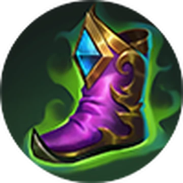

Sora Gameplay
Sora Gameplay  Sora Gameplay
Sora Gameplay
At the start of the match, upgrade Sora's first skill for damage. In the laning phase in the Exp lane, play safely and poke the enemy while rushing to reach level 4 to unlock his ultimate. Zone the enemy team and help clear objectives. Protect your lane turret at the same time while protecting and helping your teammates aswell.
When it comes to fighting single enemies or assassinating squishy targets, use Thunder form and build stacks using your passive to use your ultimate again dealing AoE damage. Otherwise, use your Torrent form when in team fights to tank damage and crowd control.

Tough Boots